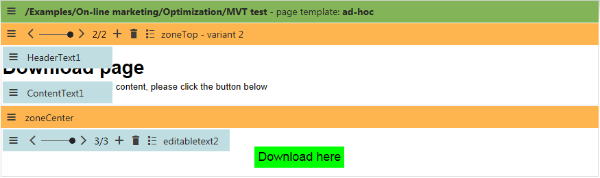

Multivariate testing
Multivariate testing (MVT) provides a way to optimize your website's pages based on the behavior of visitors. It allows you to define any number of elements on a page as variables and create different versions for each one. Once the test is started, users who view the page will see one of the possible versions of its content and their subsequent activity will then be tracked to determine which modifications produce the best results.
The basic objects used to manage this functionality are MVT tests, which can be created for specific pages on the website. You can implement the changes that you wish to test by creating Variants of the standard design objects that make up the content of the given page. This includes Web parts, entire web part zones and Widgets in the page's editor zones.
Testing is not done for individual variants, but rather for Combinations of the variants on the page. Because scenarios with multiple object variables can lead to a very large amount of possible combinations, you can limit the scope of the test by disabling those that you are not considering as options. The default page is also available as a combination, so you can compare potential improvements with the baseline statistics (those of the page with its original, unmodified content).
The image below shows how a page with a defined multivariate test could look in the design interface. There are two different versions of the top zone's content and three possible variants of the web part that displays the download button in the bottom zone. That makes six total combinations of the page's content which can be included in the MVT test.

A page with a defined MVT test
With multivariate testing, results are tracked for specific combinations of the variants defined on a single page, which represent individual modifications. If you wish to monitor the aggregate effect of all changes made to an entire page as a single variable, you may use A/B testing, which is another optimization feature provided by Kentico.
Note: Each page can only have one A/B or MVT test running at a given time.
Kentico EMS required
Features described on this page require the Kentico EMS license.
How multivariate testing works
When a visitor navigates to a page that has a running MVT test on the live site, one of the enabled content combinations will be displayed. The combination is chosen randomly for every user. With a large enough visit sample size, each active combination should receive roughly the same amount of traffic during the course of the test.
A persistent cookie is stored in the visitor's browser, used to identify which combination was assigned to the user by the given MVT test. The name of the cookie uses the following format:
CMSMVT<MVT test code name>
The cookie saves the internal code name of the assigned combination as its value. This cookie expires either within 30 days after the last visit on the tested page, or on the date when the test is configured to end.
Any conversions performed on the website by users who have passed through a page where an MVT test is running will be logged for the given test under the assigned combination, which is taken from the value of the MVT testing cookie. The logging of conversion hits is provided by the Web analytics application. In addition to monitoring conversions, the cookie also ensures that returning visitors are always shown the same content combination that was previously assigned to them, which helps avoid confusion by maintaining a consistent appearance of the tested page.
It is possible to run multiple MVT tests concurrently for different pages on the same website. Conversions will be logged for all tests defined on the pages visited by a given user, according to the cookies present in the browser.